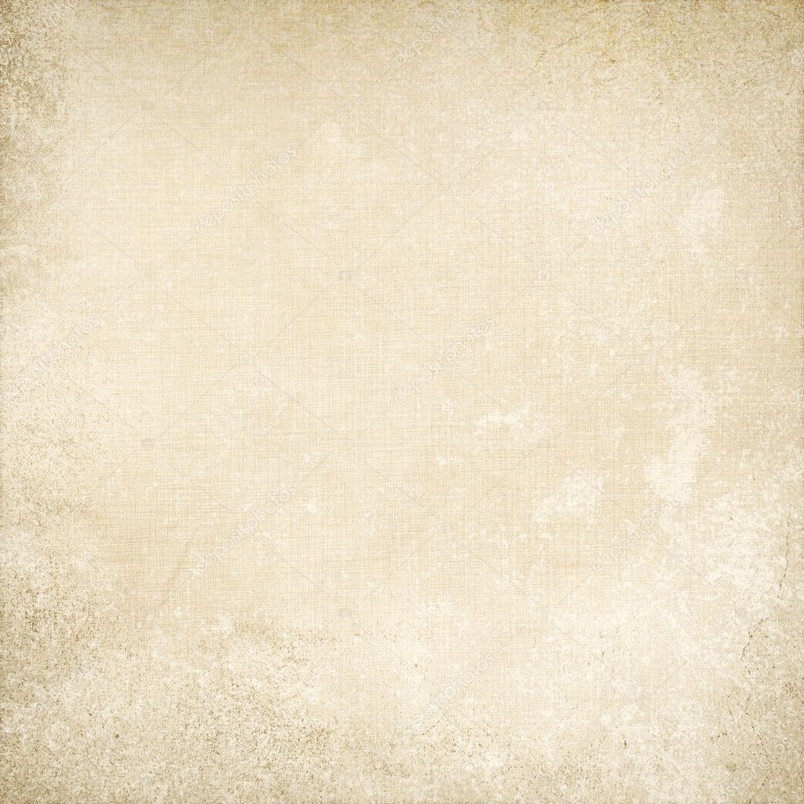

<ion-header>
  <ion-navbar>
    <button ion-button menuToggle>
      <ion-icon name="menu"></ion-icon>
    </button>
    <ion-title>Home</ion-title>
  </ion-navbar>
</ion-header>

<ion-content>
  <h3>Ionic Menu Starter</h3>

  <!---->

  <p>
    If you get lost, the <a href="http://ionicframework.com/docs/v2">docs</a> will show you the way.
  </p>

  <hello-world></hello-world>

  <button ion-button secondary menuToggle>Toggle Menu</button>
</ion-content>
